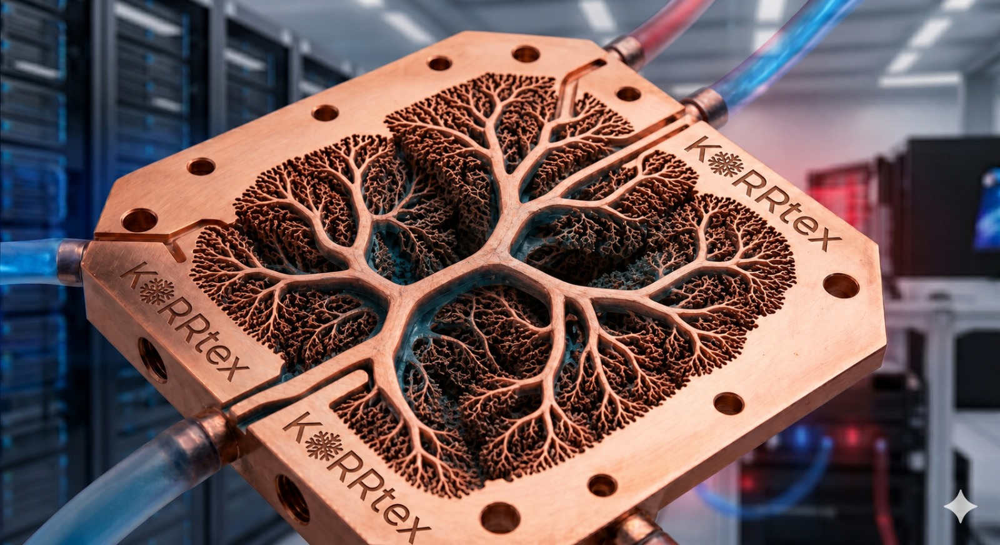
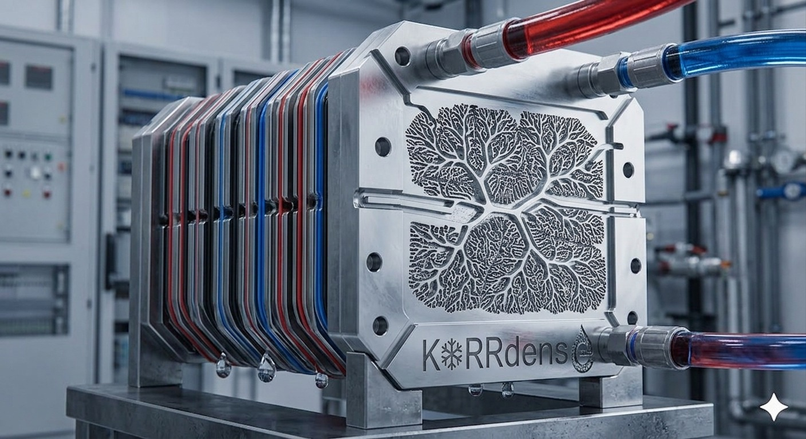
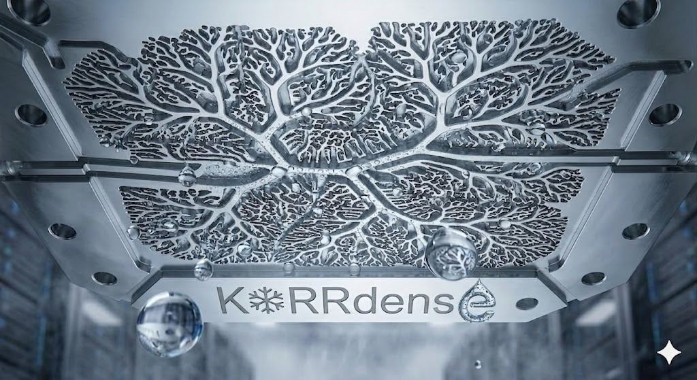

01
Selective additive manufacturing
Internal geometries that conventional machining cannot produce: branched channels, gradient densities, integrated headers.
Bio-inspired cooling.
Conventional cold plates are still mostly passive plumbing. The bottleneck is no longer total wattage. It is local hotspots, transient loads, dry-out, fouling, and flow imbalance. Failures cascade into throttling, shorter lifetime, oversized systems, expensive downtime.
One equation governs every cooling system on Earth.
Internal geometries that conventional machining cannot produce: branched channels, gradient densities, integrated headers.
Controlled wetting, leak-tight assembly, oxidation barriers. Process know-how, slow to replicate even with the same printer.
Hotspot-routing architectures, condenser networks, flow-balancing manifolds. Patentable structures rooted in fluid mechanics.

Multi-layer biomimetic cold plate.

3D-stacked variant. Volumetric heat removal.
20 yrs founding ventures in water, energy & industrial.
Hebrew U PhD. IDTechEx awardee. Composite & ceramic systems.
CTO at NitroFix. 15+ yrs deep-tech R&D. Tel Aviv U PhD.
8200 alumnus. AI / HCI research at Bar-Ilan. Builds the wedge.
VP Projects at Ayalon Highways. ex-Ministry of Finance.
